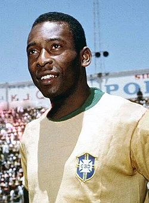
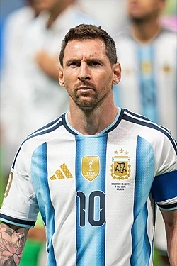
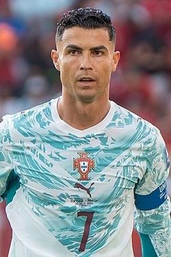
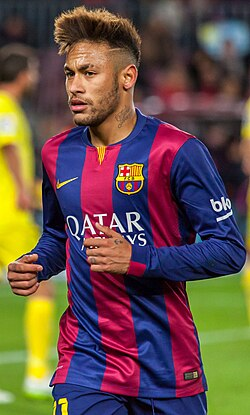
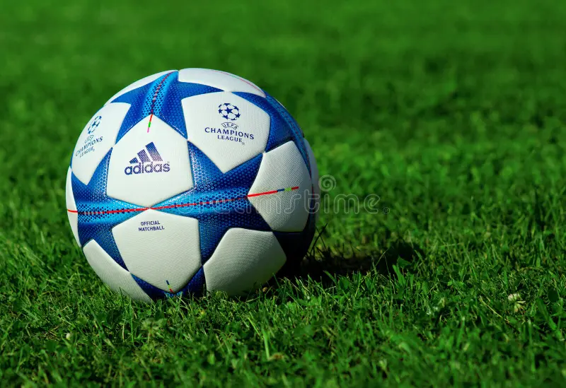

Sobre o Futebol
1. Raízes Ancestrais: O Chute Inicial
O futebol transcende o esporte: é uma linguagem universal que conecta bilhões de pessoas ao redor do planeta. Embora a Inglaterra seja a pátria oficial do futebol moderno, a ideia de chutar uma bola vem de milhares de anos atrás. Na China Antiga, por volta do século III a.C., os militares praticavam o Cuju, um treinamento militar onde era preciso chutar uma bola de couro preenchida com penas em direção a uma rede. Civilizações como os maias, os gregos e os romanos também tinham seus próprios jogos de bola, mas o formato que conhecemos hoje começou a ganhar vida na Europa Medieval, com partidas caóticas e violentas que muitas vezes terminavam em brigas generalizadas pelas vilas.
2. O Nascimento na Inglaterra: A Unificação das Regras
O futebol moderno nasceu oficialmente em 26 de outubro de 1863, no casarão Freemasons' Tavern, em Londres. Foi lá que representantes de escolas e clubes ingleses se reuniram para unificar as regras do jogo e fundar a The Football Association (FA). Naquela mesa, eles separaram definitivamente o futebol do rúgbi — proibindo o uso das mãos para carregar a bola e os carrinhos violentos. Pouco tempo depois, o esporte se espalhou pelo mundo através dos marinheiros, engenheiros e estudantes britânicos que viajavam pelos continentes.
3. A Chegada ao Brasil: A Semente do País do Futebol
A história do futebol em terras brasileiras tem um nome central: Charles Miller. Em 1894, o jovem paulistano retornou da Inglaterra após concluir seus estudos trazendo na bagagem duas bolas de couro, um par de chuteiras, um livro de regras e uma paixão avassaladora. Em abril de 1895, ele organizou a primeira partida oficial do país em São Paulo. Inicialmente restrito à elite aristocrática, o futebol rapidamente rompeu as barreiras sociais, ganhou as várzeas populares e as fábricas, transformando o Brasil na maior potência e no coração espiritual do esporte mundial.
Lendas do futebol
Pelé

Edson Arantes do Nascimento, eternizado como Pelé, foi o maior futebolista e um dos maiores atletas de todos os tempos. Atuando como atacante, ele construiu a maior parte de sua vitoriosa carreira no Santos e a encerrou no New York Cosmos. É o único jogador na história a conquistar três Copas do Mundo pela seleção (1958, 1962 e 1970). Diante de seu impacto revolucionário, o "Rei do Futebol" foi eleito de forma unânime e conjunta como o Melhor Jogador do Século pela FIFA e Atleta do Século pelo Comitê Olímpico Internacional. Ele registrou o recorde mundial do Guinness com 1.279 gols em 1.363 jogos. Fora dos gramados, Pelé atuou como embaixador humanitário e chegou a exercer o cargo de Ministro do Esporte do Brasil antes de falecer, em dezembro de 2022, aos 82 anos.
Lionel Messi

Lionel Andrés Messi Cuccittini é um futebolista argentino que atua como atacante no Inter Miami e amplamente considerado um dos maiores jogadores de toda a história do esporte. Revelado pelo Barcelona, clube onde marcou impressionantes 672 gols oficiais e construiu uma dinastia de títulos, o craque também teve passagem pelo Paris Saint-Germain antes de migrar para o futebol dos Estados Unidos. Como capitão da Seleção Argentina, alcançou a consagração máxima ao vencer a Copa do Mundo de 2022 no Catar, além de duas edições da Copa América (2021 e 2024). Ele é o recordista absoluto em premiações individuais, ostentando oito prêmios Bola de Ouro da France Football e oito títulos de Melhor Jogador do Mundo pela FIFA. Com um recorde histórico de 49 conquistas coletivas ao longo de sua trajetória profissional, Messi consolidou-se como o atleta mais vitorioso da história do futebol mundial.
Cristiano Ronaldo

Cristiano Ronaldo dos Santos Aveiro, popularmente conhecido como CR7, é um futebolista português que atua como atacante e é amplamente reconhecido como um dos maiores jogadores de todos os tempos. Revelado pelo Sporting CP, ele fez história no Manchester United, Real Madrid (onde se tornou o maior artilheiro da história do clube com 450 gols) e Juventus, defendendo atualmente o Al-Nassr, da Arábia Saudita, além de ser o capitão da Seleção Portuguesa. O craque é o maior artilheiro da história do futebol em jogos oficiais e também o maior goleador a nível de seleções, acumulando mais de 970 gols marcados e recordes absolutos de gols e assistências na Liga das Campeões da UEFA. Ao longo de sua vitoriosa carreira, conquistou cinco prêmios Bola de Ouro, cinco títulos da Champions League e liderou Portugal nas conquistas inéditas da Eurocopa de 2016 e da Liga das Nações de 2018–19.
Neymar Jr.

Neymar da Silva Santos Júnior é um futebolista brasileiro que atua como meio-campista ofensivo ou atacante e é amplamente reconhecido pela sua habilidade técnica, dribles e criatividade em campo. Revelado pelo Santos, onde conquistou a histórica Copa Libertadores de 2011, ele alcançou o topo da Europa no Barcelona ao formar o lendário trio "MSN" e vencer a Champions League de 2015. Em 2017, protagonizou a transferência mais cara da história do futebol ao ser contratado pelo Paris Saint-Germain por 222 milhões de euros. Pela Seleção Brasileira, o camisa 10 liderou a conquista da inédita medalha de ouro nas Olimpíadas do Rio 2016 e superou Pelé nos critérios da FIFA para se isolar como o maior artilheiro da história da seleção, com 80 gols marcados. Após uma passagem pelo Al-Hilal, o craque retornou ao futebol brasileiro para defender o Santos, consolidando um legado de mais de 450 gols na carreira
Times de Futebol
Real Madrid
O Real Madrid Club de Fútbol é um clube profissional espanhol fundado em 1902 com o nome de Madrid Football Club. O título honorífico "Real" foi concedido ao clube pelo Rei Afonso XIII em 1920, época em que a coroa real também foi incorporada ao seu escudo tradicional. Eleito pela FIFA como o Clube do Século XX, o gigante merengue manda seus jogos no lendário Estádio Santiago Bernabéu e é uma das três únicas equipes que jamais foram rebaixadas no Campeonato Espanhol. A equipe detém uma hegemonia histórica incomparável no cenário continental, sendo o recordista absoluto de títulos com 15 conquistas da Liga dos Campeões da UEFA e múltiplos títulos mundiais. Atualmente administrado sob o comando do técnico José Mourinho, o clube é reconhecido como a agremiação de futebol mais valiosa do mundo e a primeira a romper a barreira de 1 bilhão de euros em faturamento anual.
Barcelona
Futbol Club Barcelona, conhecido como Barça, é um clube profissional espanhol fundado em 1899 por um grupo de futebolistas suíços, ingleses e catalães. Com o célebre lema "Més que un club", a equipe manda seus jogos no Spotify Camp Nou e ostenta uma história repleta de glórias, incluindo 29 conquistas de La Liga e 5 troféus da Liga dos Campeões da UEFA. A filosofia e a identidade do futebol praticado pelo clube baseiam-se fortemente em La Masia, suas lendárias categorias de base, reconhecidas mundialmente por lapidar talentos extraordinários e mentes brilhantes do esporte. O ápice moderno dessa dinastia e da filosofia do clube ocorreu entre 2014 e 2017 com o inesquecível trio "MSN", formado por Lionel Messi (a joia máxima de La Masia), Luis Suárez e Neymar. Amplamente considerada uma das parcerias mais letais de todos os tempos, a linha de frente sul-americana anotou impressionantes 364 gols em três temporadas, liderando o clube na histórica conquista da Tríplice Coroa em 2015 e imortalizando um legado de pura magia nos gramados globais.
São Paulo
São Paulo Futebol Clube, popularmente conhecido como Tricolor do Morumbi, é um clube poliesportivo brasileiro fundado em 25 de janeiro de 1930 a partir da união entre dissidentes do Club Athletico Paulistano e da Associação Atlética das Palmeiras. Mandando suas partidas no icônico Estádio do MorumBIS, a agremiação destaca-se por ser uma das poucas que jamais foram rebaixadas para a segunda divisão nacional e ostenta a marca de ser o único clube do país a ter conquistado absolutamente todos os títulos oficiais atualmente em disputa que uma equipe brasileira pode vencer. A identidade vitoriosa do clube consolidou-se internacionalmente sob o comando do lendário técnico Telê Santana na década de 1990, época em que faturou o bicampeonato continental e mundial. O Tricolor é o recordista nacional em conquistas de relevância global, somando três Copas Libertadores da América e três títulos Mundiais de Clubes (1992, 1993 e 2005), além de possuir seis taças do Campeonato Brasileiro, incluindo um inédito tricampeonato consecutivo na era dos pontos corridos.
Principais Campeonatos
Champions League
UEFA Champions League é a maior e mais prestigiada competição de clubes do planeta. Criada em 1955 como Taça dos Clubes Campeões Europeus, o torneio reúne a elite do futebol continental e consolidou-se como o ápice técnico e econômico do esporte global. O Real Madrid ostenta uma soberania histórica incomparável na competição, sendo o recordista absoluto com 15 títulos conquistados. Individualmente, o torneio é marcado por recordes impressionantes: Cristiano Ronaldo é o maior artilheiro de todos os tempos com 140 gols, seguido de perto por Lionel Messi, com 129 gols, e por Robert Lewandowski, que ultrapassou a marca centenária e soma 109 gols. Nas áreas técnicas, o italiano Carlo Ancelotti destaca-se como o treinador mais vitorioso da história da Champions, somando 5 taças em seu currículo
Libertadores
Copa Libertadores da América é a principal e mais prestigiosa competição de clubes de futebol da América do Sul. Criada em 1960, a competição foi batizada em homenagem aos líderes da independência das nações sul-americanas, os "Libertadores". O torneio é amplamente reconhecido por sua atmosfera única, mística fervorosa e duelos intensos. O clube argentino Independiente ostenta a soberania histórica na competição, sendo o recordista isolado com 7 títulos conquistados (todos na era clássica). No topo dos artilheiros de todos os tempos, o equatoriano Alberto Spencer é o líder absoluto e inalcançável com 54 gols marcados por Peñarol e Barcelona de Guayaquil. Entre os brasileiros, o maior goleador da história do torneio é Gabigol, que soma 31 gols, enquanto equipes como São Paulo, Palmeiras, Santos, Grêmio e Flamengo lideram o ranking de títulos do país, cada um com 3 taças em suas ricas trajetórias continentais.
Copa do Mundo
Copa do Mundo FIFA é a maior e mais assistida competição de futebol do planeta. Criado em 1930 com sua edição inaugural sediada e vencida pelo Uruguai, o torneio reúne seleções de todos os continentes a cada quatro anos em uma celebração esportiva de audiência bilionária. O Brasil permanece isolado como o maior vencedor da história da competição, ostentando o status de único pentacampeão mundial (1958, 1962, 1970, 1994 e 2002). Em sua edição mais recente, realizada na América do Norte, a Espanha sagrou-se campeã ao bater a Argentina na grande final, enquanto o atacante francês Kylian Mbappé consolidou-se como o maior artilheiro de toda a história das Copas do Mundo. O torneio, que expandiu seu formato para abrigar 48 nações participantes, prepara-se agora para uma edição histórica de centenário que cruzará oceanos para ter suas partidas divididas entre Europa, África e América do Sul.
Curiosidades do futebol
Principais Posições do futebol
- Goleiro
- Defensore
- meio-campista
- Atacante
Imagem de futebol
